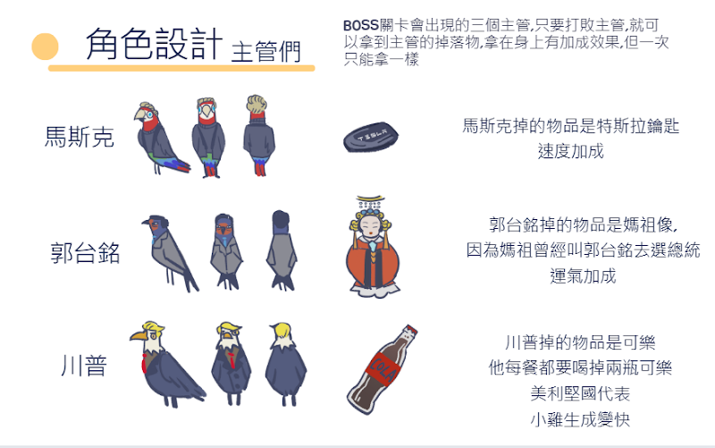

團體企劃書
學生:1411222006 郭娘伊 1411222016 黃宥寧 1411222017 蔡雨岑
1411222029 林承佑1411222035 彭泯宸1411222041 陳櫟任
1411242020戴妘倩
指導老師:陳賢錫 徐豐明
壹、封面
遊戲名稱 NOVICE(菜鳥的意思)
設計概念:畫面以簡潔可愛為主，下方的小鳥為logo，直接把菜鳥形象化
▲ 圖標/LOGO 設計
Logo字體運用手寫及不規則的筆刷，以及亮眼清新的藍綠色，表現出遊戲是很休閒的適合所有年齡層
貳、發想:
在忙碌工作或勤奮向學一整天後，玩手機遊戲應該是大部分人下班下課的休閒娛樂，因為我們覺得要動腦的遊戲（例如：戰略手遊）或需要投入大量心思經營的遊戲（例如：開放世界手遊）不適合在想要好好放鬆時遊玩，所以想製作出一款以休閒為主題並且能夠離線遊玩的遊戲，遊玩方式不會太複雜，讓人能夠打發時間又可以在遊玩的同時感到放鬆，，達到“玩遊戲=休息”的效果。
參、遊戲類型:
2.5D 單機 休閒離線小品遊戲 無限時
目的: 讓玩家在無聊時，有個可以打發大量時間的休閒遊戲
風格:第三人稱視角、多種2D場景
肆、故事大綱:
職場環境是非常冷酷的，菜鳥必須穿梭在辦公室內，並且生存到最後，以打敗現在的體制，成為下一任主管
伍、遊戲流程:
一、操作方式:
▲使用手指頭控制圓圈，已改變人物在畫面中的方向
▲搖桿超出透明圓圈的範圍，會朝同方位快速前進
以閃避避免被吃掉，加速只能持續五秒


▲ 開始遊戲-結束遊戲
▲ 彩蛋
四、市場分析
1.SWOT 分析
S優勢:遊戲操作簡易好上手，風格較為清新可愛，目前年輕族群喜愛風格，大眾接受度高
W 劣勢:類似玩法遊戲眾多，如參考遊戲貪吃蛇，容易應玩法不特殊，曝光率低
O 機會:遊戲使用較為簡潔的配色及畫風，角色設計可愛，且可配戴不同飾品，迎合時下年輕人風潮
T 威脅:現今市場以連線遊戲為主，刺激的對戰遊戲被大部分人喜愛，沒有劇情小遊戲，相較起來平淡
2.目標市場與受眾
目標市場:休閒小品、單機遊戲
目標受眾:喜好休閒小品遊戲的玩家、需要打發空閒時間的人
陸、 遊戲風格與主角設計:
一、 概念設計:


設計概念:辦公室有不同樓層，藉由樓梯上下，不同空間設施不盡相同，可以與物件做互動，例如畫面中的沙發可以做，背景的草地可以躺
BOSS關卡示意圖
二、補充概念圖:
遊戲開始介面

柒、參考遊戲

八、工作分配
概念發想：郭娘伊 蔡雨岑 黃宥寧 林承佑 彭泯宸 陳櫟任 戴妘倩
關卡設計：郭娘伊 蔡雨岑 黃宥寧 林承佑 彭泯宸 陳櫟任 戴妘倩
角色設計：蔡雨岑
場景設計：郭娘伊 蔡雨岑
開頭動畫 ：黃宥寧
職場小故事及彩蛋動畫：郭娘伊 蔡雨岑 黃宥寧
UI設計：郭娘伊 彭泯宸
程式設計：林承佑 彭泯宸 陳櫟任
音樂：彭泯宸
九、甘特圖